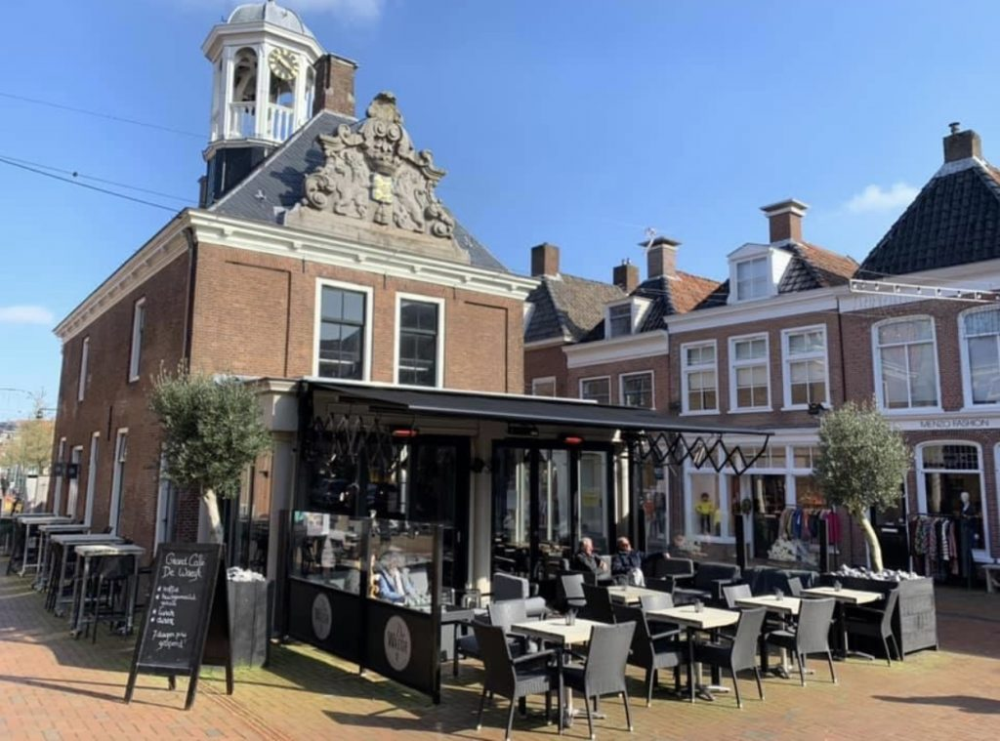
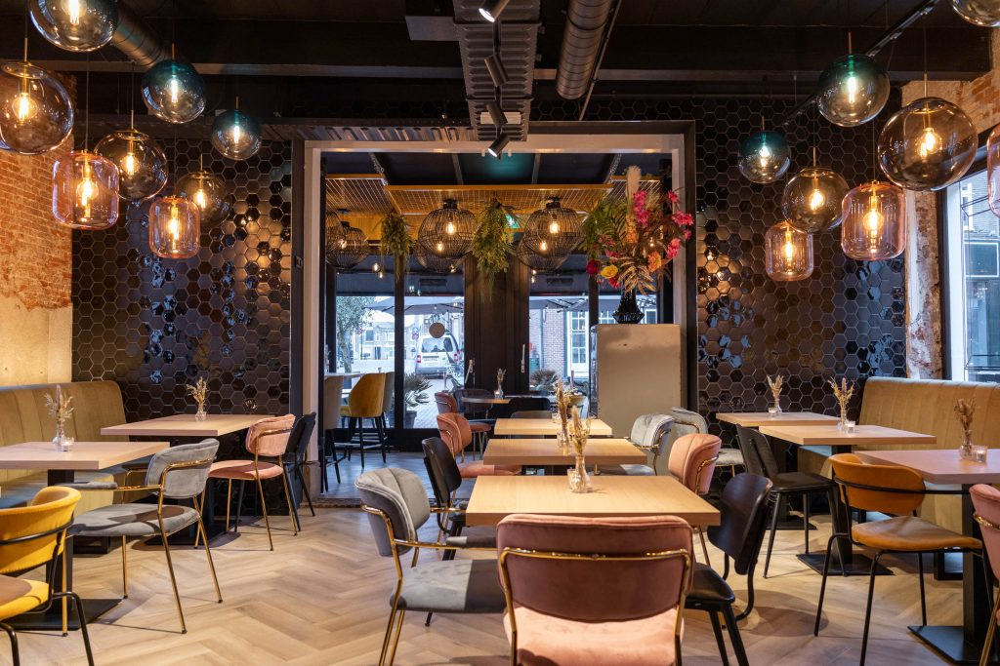

Lunch-arrangement
22,95 p.p.
Soep vooraf, diverse soorten luxe belegde broodjes en een warme snack.
Exclusief consumpties.

Grand café in hartje Dokkum
Eten, drinken, genieten. Lunch, diner, een borrel met bitterballen of een middag high tea, aan de Grote Breedstraat.

Een mooie plek in hartje centrum van het gezellige vestingstadje Dokkum. Je komt hier voor een uitgebreide lunch, een diner met vrienden of familie, een plank hapjes bij de borrel of een middag high tea.
Kerst 2026
We zijn op 1e en 2e Kerstdag (25 en 26 december) geopend.
Lunch, diner, hapjes en drankjes. Vraag ook naar de soep, vis en het dessert van de dag.
geserveerd met friet en frisse salade
Prijzen per glas en per fles.
Allergieën of een dieetwens? Laat het de bediening weten.

Een afsluiting na een wandeling, een feestje of gewoon even bijkletsen? Een high tea kan altijd. Geniet een middag van onze thee met de lekkerste hapjes.
Op zoek naar een leuke plek voor een groepsdiner met vrienden, familie of collega's? Dan ben je bij ons aan het juiste adres. Ook met een grote groep lunchen kan.
22,95 p.p.
Soep vooraf, diverse soorten luxe belegde broodjes en een warme snack.
Exclusief consumpties.
49,00 p.p.
Voor groepen vanaf 10 personen.
Een proeverij van diverse voorgerechten
Een proeverij van diverse nagerechten
2 gangen 38,00 p.p.
3 gangen 44,50 p.p.
Voor groepen vanaf 10 personen.
Een groep aanmelden? Bel 0519 220452 of mail info@dewaeghdokkum.nl.
Al ervaring in de horeca, of wil je juist graag beginnen? We hebben vaak verschillende vacatures open staan, maar een open sollicitatie is ook altijd welkom. Ben jij onze nieuwe barkeeper, afwasser, kok, keukenhulp of collega in de bediening? Stuur je cv met motivatie naar info@dewaeghdokkum.nl.
We zijn een erkend leerbedrijf met ervaren leermeesters. Zoek je een stageplaats of een BBL-plek in de keuken of bediening? Neem gerust contact met ons op.
Versterking voor ons bedieningsteam in de vakanties en weekenden. Zin in een bijbaan in een leuk, jong en gezellig team?
Mail naar info@dewaeghdokkum.nl of stuur een WhatsApp naar 06 42216260.
Ben jij enthousiast, gek op het vak en zit je vol goede ideeën? Wij zijn een jong en enthousiast team met ruimte voor creativiteit en nieuwe ideeën.
Interesse of meer info? Mail naar info@dewaeghdokkum.nl of stuur een WhatsApp naar 06 42216260.
Ben jij een echte aanpakker en werk je graag in een leuk en dynamisch team? Niet bang voor drukte, en geen probleem met werken in de avond en het weekend? Solliciteer dan naar een baan in onze keuken.
Stuur je cv met motivatie en beschikbare tijden naar info@dewaeghdokkum.nl.
Reserveer een tafel telefonisch of per mail. Heb je een vraag? Laat het ons weten.